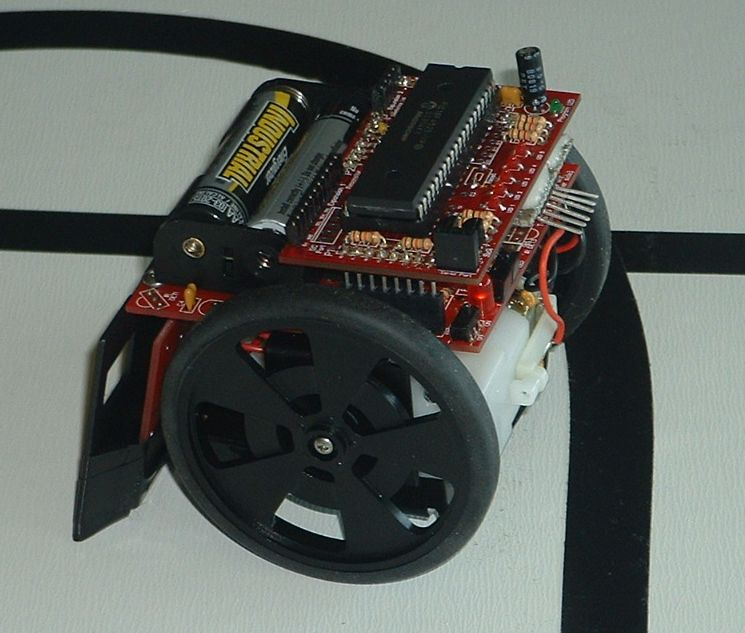
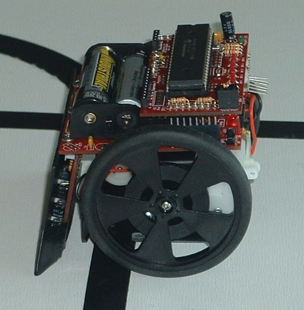
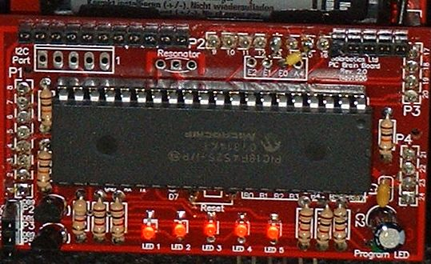
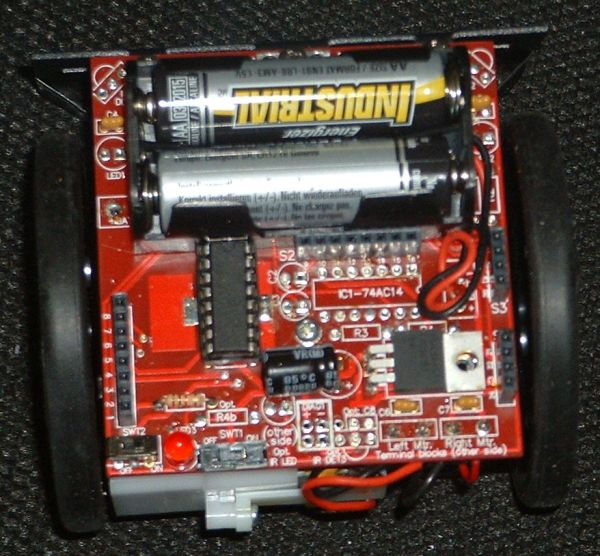
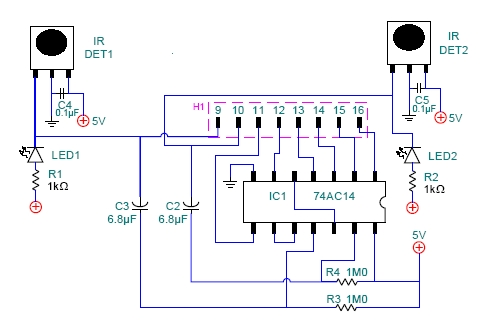
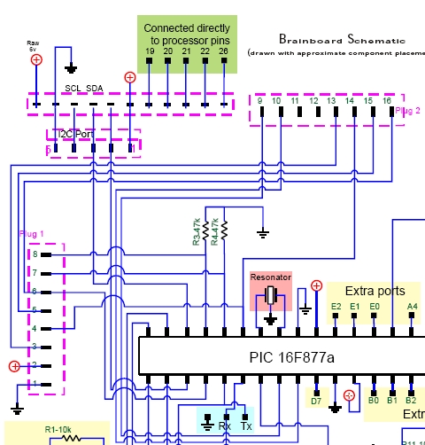
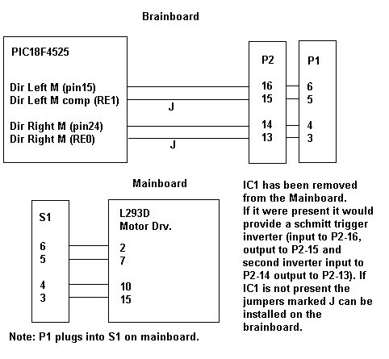

June 12, 2008
Dynamic braking involves putting a resistive load or short circuit accoss the motor terminals. The faster the motor is turning the greater the braking effect. This has two advantages over driving the motors in the reverse direction:
- No current is drawn from the batteries during dynamic braking. This will conserve the batteries and will avoid possible unintended resets and unreliable operation of the PIC MCU. When motors are started they draw a heavy inrush current. When the motors are driven in the opposite direction two which they are turning the inrush current is twice as bad.
- With dynamic braking the breaking force is proportional to the speed of the motor. As the robot comes to a stop the braking also stops automatically. If on the other hand the motors are driven in the reverse direction one needs to stop driving them in the reverse direction at the correct time or the robot would start to move backwards. As is there is no feedback from the motors to let the PIC know when the robot has come to a stop. The amount of time the robot needs to stop depends and the speed of the robot when braking starts. There is not feedback in this system to tell the PIC what the speed is and the top speed of the robot will depend on how fresh the batteries are and other factors. This is all problematic if one uses a specific time period to drive the motors in reverse but is not an issue if dynamic braking is used.
As is the Sumovore mainboard is wired in a way that does not allow for dynamic braking of the motors. I have added jumpers to the PIC brainboard 2 and have not installed the Mainboard IC1 on a new robot. This allows me to demonstrate the difference between dynamic braking the motors and letting them coast to a stop. Dynamic braking is achieved here by grounding both motor terminals at the same time. For this to work the motor driver IC should remain enabled (speed is set for 100% duty cycle). Since both terminals of one or both motors are grounded current will not be drawn from the batteries.The links below are to two AVI files. One shows the robot spinning and dynamic braking being used to stop the robot on the line after a spin turn. The second shows the robot spinnig and coasting to a stop and overshooting the line. In both cases detection of the line by the left most sensor was used to indicate it was time to stop the motors.
It is possible to stop the robot by reversing both the motors but it is very difficult to reverse them and keep them on for the correct amount of time to that the robot will stop on the line and not move in the reverse direction. Dynamic braking on the other hand does not have that problem. This could be helpful in acute sharp turns!
The first photo below shows a sumovore that was programmed to go straight ahead full speed until the center sensor detected a line. At that point the speed was set to zero for both motors; this allows the robot to coast to a stop. The batteries were fresh.
Coasting to a Stop
(the entire robot crosses the line)

Dynamic braking
(the robot stops much faster -- the sensors have crossed the line but most of the robot is still behind the line)
The motor driver IC can allow for dynamic braking because it has two direction control inputs for each motor. On the sumovore IC1 is used to complement a motor direction control line from the brainboard and provide the extra control line to the motor driver chip. The PIC microcontroller on the brainboard has many extra IO pins that are not in use. It is possible to use two of these IO pins of the PIC rather than IC1 to provide the other two control lines needed for the motor driver IC. This allows more flexibility and the possibility of using dynamic braking of the motors.
For the brake to work the two control lines for a motor are made low and the enable is on 100% dutycycle (full speed!).
void brake_all(void)
{
LmotorGoFwd = NO; // all motor terminals
LmotorGoFwdCmp = NO; // grounded
RmotorGoFwd = NO; // dutycycle left at 100%
RmotorGoFwdCmp = NO;
}void main(void)
{initialization();
LmotorGoFwd = YES; //
LmotorGoFwdCmp = !LmotorGoFwd;
RmotorGoFwd = YES; //
RmotorGoFwdCmp = !RmotorGoFwd;
set_motor_speed(left, fast, 0); //enableLmotor = yes; //
set_motor_speed(right, fast, 0); //enableRmotor = yes; //
while(1)
{
SeeLine.CmpEdgeLeft = ( adc(EdgeLeft) > threshold );
SeeLine.CmpEdgeCntLeft = ( adc(EdgeCntLeft) > threshold );
SeeLine.CmpEdgeCenter = ( adc(EdgeCenter) > (threshold) );
SeeLine.CmpEdgeCntRight = ( adc(EdgeCntRight) > threshold );
SeeLine.CmpEdgeRight = ( adc(EdgeRight) > (threshold) );
if ( SeeLine.CmpEdgeCenter ) brake_all();
LED1 = !SeeLine.CmpEdgeLeft;
LED2 = !SeeLine.CmpEdgeCntLeft;
LED3 = !SeeLine.CmpEdgeCenter;
LED4 = !SeeLine.CmpEdgeCntRight;
LED5 = !SeeLine.CmpEdgeRight;}
}The schematics shown above are from the Sumovore manual and the brainboard manual. There are a lot of conductors and this sort of obscures what I am trying to show. The schematic below shows only the motor control lines!
Near the top of the image two very short jumpers are visible.
One between E0 and P2-15. The other jumper is between E1 and P2-13

Mainboard Without IC1 and Accociated Parts
On robots that have IC1 installed it is in a socket and so can be easily removed!

Schematic of Mainboard IC1 Circuit
Note that connector H1 is actually labled S2 on the version 1.1 board and H2 on the Version 1.0 board!
None of these Parts are needed for Line following if Jumpers are added to the brainbaord

On the Actual version 2.0 brainboard the connector is labled P2 rather than Plug 2

